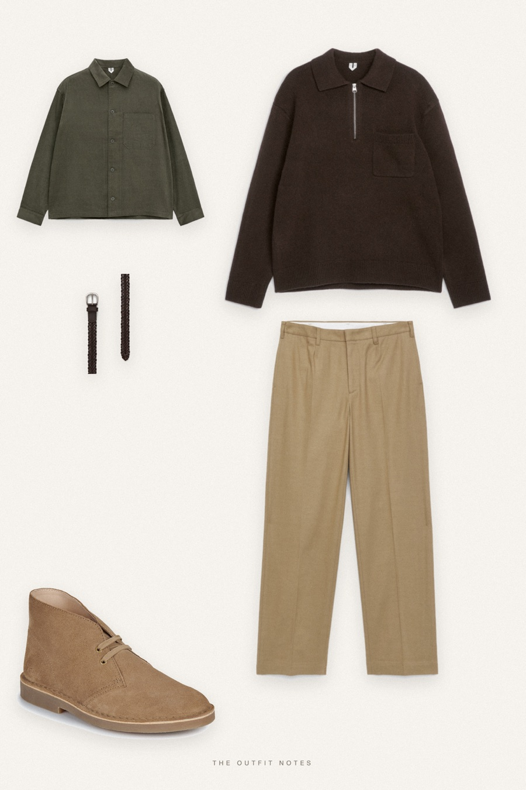
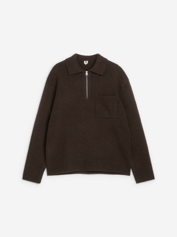
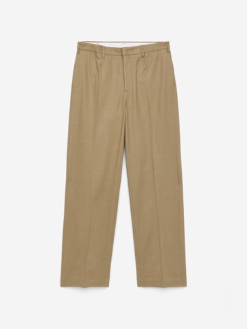
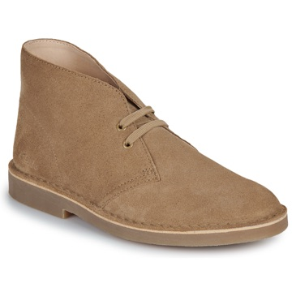

Field Notes
olive cord, brown zip polo

Old money fall outfit for men with a countryside feel: an ARKET olive corduroy overshirt layered over a dark brown knitted wool zip polo, sand beige tailored trousers and Clarks suede desert boots, with a braided leather belt. Earthy, textured and easy to wear for autumn walks and weekends away.
The pieces
This page contains affiliate links: if you buy through them, we may earn a commission at no extra cost to you. Disclosure.
 ARKET
ARKET
Olive corduroy overshirt
Shop
ARKET
Brown knitted zip polo
Shop
ARKET
Sand tailored cotton trousers
Shop
Clarks
Sand suede desert boots
Shop ARKET
ARKET
Brown braided leather belt
Shop
Prices are indicative, taken when the look was published, and may have changed. Pictures of the outfit are AI-generated illustrations of real products; the product photos are the retailers' own.
Published 1 October 2026.